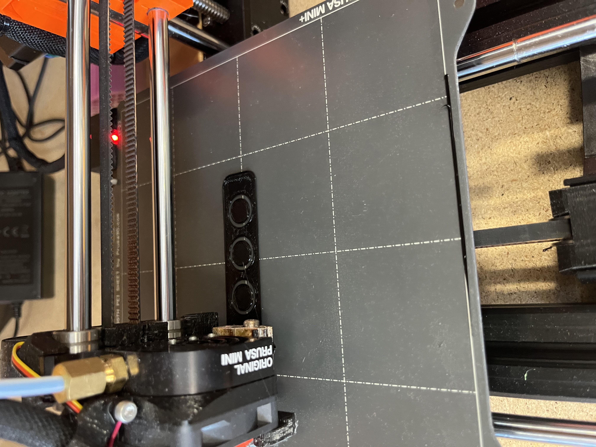
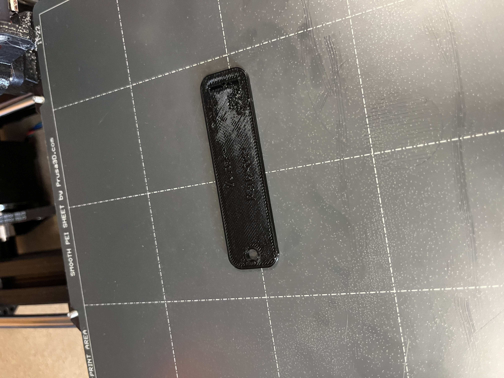
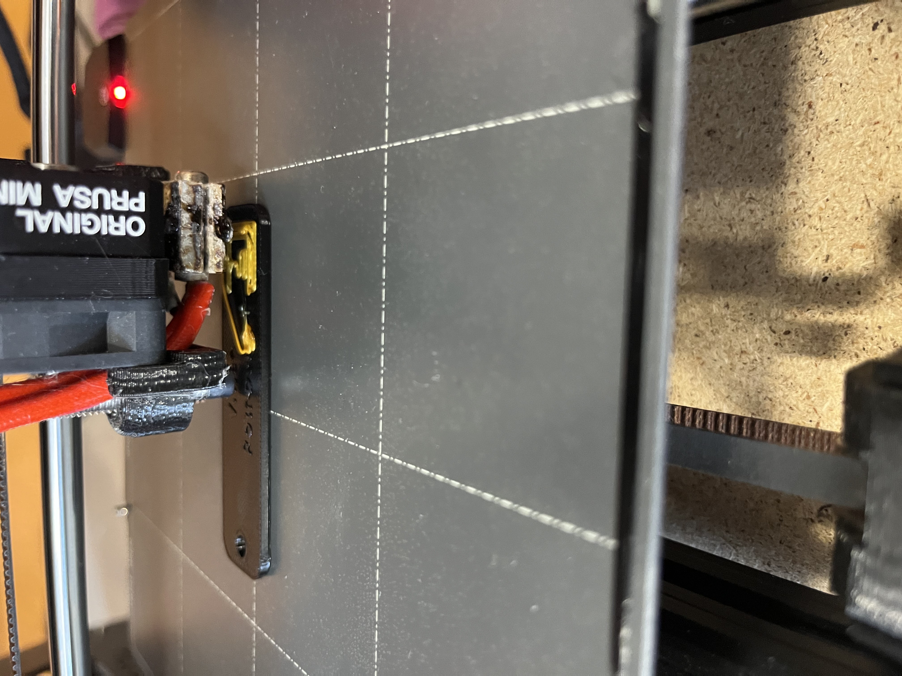
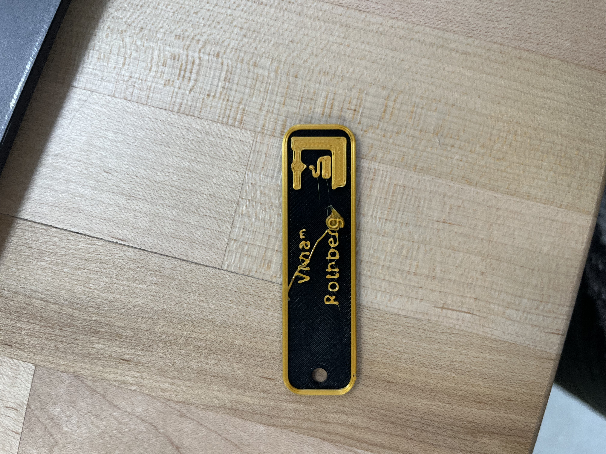
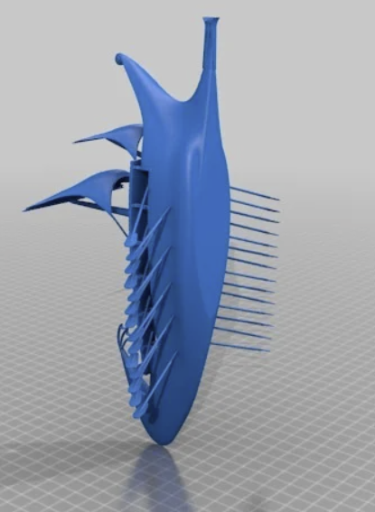
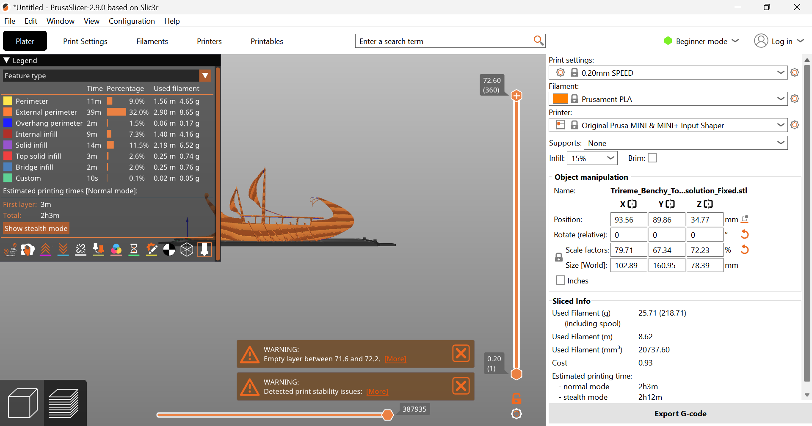
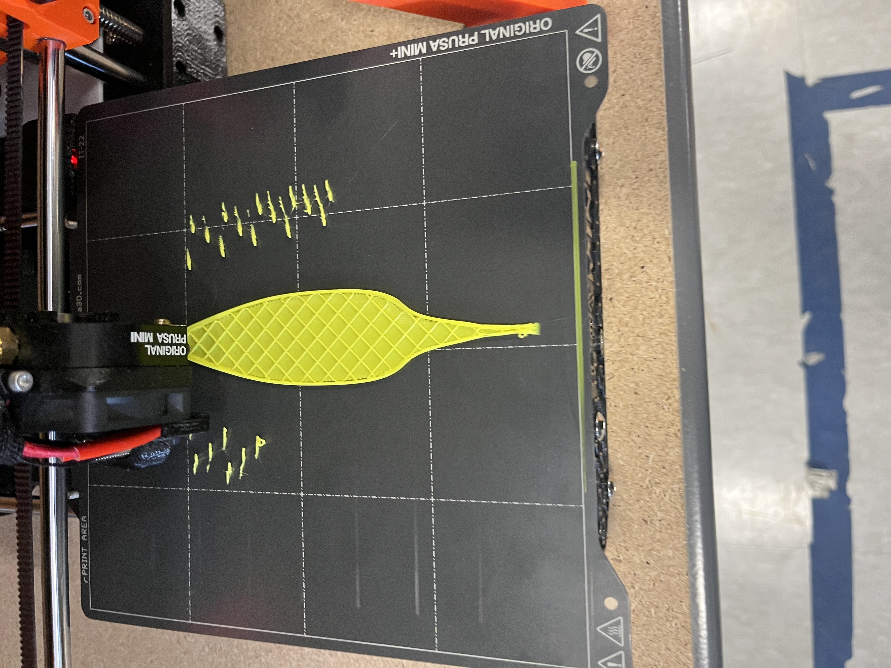

Project 2: Intorduction to CAD Design
February 7th, 2025
Introduction and Overview
In this project the objective was to get comfortable using CAD to modify pre existing design files from open source sites. I used thingiverse.comhttps://www.thingiverse.com/, thangs.com https://thangs.com/?sort=trending, and printables.com (LINK) to find open source files to work with. First I built a jewelry box using tinkercad, remixing a small hexagon box design into a honeycomb inspired box with a tree element protruding to hold more jewelry. My second design used Fusion 360 to remix a rat house with a ramp from two files. This process was focused on learning CAD design on both tinkercad and Fusion 360, which set up a comparison between the two platforms. Fusion 360 certainly allowed for more customization and technical manipulation, however tinkercad was much more accessible for me, and my level of computer literacy. My personal goal for this process was to create two designs that were functional, and tested the limits of my CAD ability. I also pushed my time constraints on this project. Ambitiously, both of the designs required at least two separate parts and then assembled by hand afterwards.
Project Steps
- Look for open source files
- Create a design sketch
- Remix 1 or more files in tinkercad
- Print design parts using PrusaSlicer
- Adjust design pieces to fit together
- Repeat steps 1 and 2
- Remix one or more files in Fusion 360
- Print design parts using PrusaSlicer
- Attach design pieces together
- Reflect on project
- Update website
Jewelry Box
For my first print I searched through thingiverse looking for inspiration on what to create. I came across a honeycomb inspired box that sparked interest (LINK). The different heights of the box file was an issue so instead I searched for a single hexagon box design(LINK) to duplicate and fuse together using CAD. Then the tree shape file was found(LINK), and with these pieces I moved to tinkercad to begin remixing.

Name tag file and settings
Tinkercad Remixing
This program is something that I had previous experience with in both middle and high school. It is a very accessible CAD program with relatively simple and easy to understand functions. However, this does mean more complex designs and customizations are harder to manipulate solely using it. For this jewelry box, the hexagon was my base block, which was duplicated 7 times around a tinkercad hexagon solid shape. Getting these shaped to line up anglewise proved to be quite challenging. What helped was using a mouse and lots of patience zooming in and out at different angles to find any possible gaps. The challenge was putting the tree into the box. I created the hole in the solid hexagon using tinkercad’s grouping and hole functions. Then I was able to duplicate the exact tree size and place it into a separate file to print. This did not go as intended, as the hole for the tree to fit into was slanted, and created a shape that no longer matched the tree’s base when it was printed flat. Overall, I found the grouping, hole, and duplication functions of tinkercad to be the most useful, while the zooming and orbiting view features were tedious.
Base layers of the name tag

Base of the name tag
Final name tag
Printing and Assembly
Since the box was made up of 8 different hexagon shapes the biggest concern was getting all of them to align and fuse together. The base layer looked as if the boxes were too far apart, but to my surprise, the box was successful on its first print. Next I printed the tree file from PrusaSlicer without adjusting any dimensions. When this print finished it was far too thin to fit into the hole, so I looked at the tinkercad dimensions and compared them to PrusaSlicer, which revealed that the z-height of the print was half in the slicer than in CAD. Therefore, I adjusted the z-height in PrusaSlicer from 5 mm to 10.8mm since the tinkercad dimension was 11 mm. After the second print the tree was too large, since I did not leave enough margin in PrusaSlicer. This is also where the slanted configuration of the hole became an apparent problem since the tree did not take the same shape. However, I chose to just file down the end of the tree and wedge it into the hole as it was, which created a strong enough joint for my purposes, but not the stable version I had hoped for. The sliding hexagon tops printed and fit pretty well, if a bit loose. I believe that this design was very successful.
Second name tag base and extra filament
Final name tag
Rat House
This design drew on two open source files for a rat house(LINK) and a mouse house(LINK), from which I took only the ramp piece. My drawn design added a skylight to the top of the house, and affixed the ramp to the back of the house. This design was supposed to be remixed only using Fusion 360, but I did end up using tinkercad and PrusaSlicer in addition. The goal was to create a functional rathouse but this pushed the size limits of the printer a bit too far in the end.
Trireme original configuration
Adjusted trireme

Print warnings
Fusion 360
This CAD program proved to be quite the struggle, it assumed a fluency with CAD programs and their language. The biggest learning curve was understanding the difference between a mesh object and a surface. There are different modifications that work for a surface, such as sketching, than for a mesh. My goal was to isolate the ramp from the mouse house file and then attach it to the rat house, then cut a hole in the top of the shelter. I ended up isolating the ramp in tinkercad after trying and failing to use the split plane and split face feature for the mesh body. At first the file imported was not cooperating and would not be selected, so I reuploaded it and this did the trick. Once the two mesh bodies were in Fusion, they were aligned and fused together. The next step was to sketch a hole in the top of the house, to sketch on the design the body had to be a surface. However, the file had a very detailed mesh. Trying to convert the mesh crashed my computer twice, before trying to reduce the geometry, which created a misshapen surface. Eventually I repaired the mesh a couple of times and tried converting it as a faceted base form, instead of a prismatic. This finally worked and then I was able to cut a hole in the top using the sketch and hole tools. While I found Fusion 360 to be quite tedious and tough to learn, the orbit and pan shortcuts with the mouse were so much more convenient than tinkercad.
Trireme base printing

Final trireme torture test
Printing
This print brought up quite a few challenges in PrusaSlicer. Professor Roy suggested using the cut tool in the normal mode. At first my imported file from Fusion 360 was in 3MF format, so I had to switch to the stl version. This was a different workflow from my previous design where I used two separate files initially, however it worked well here since splitting the design in Fusion proved quite difficult. The PrusaSlicer cut tool selects the plane for the cut and then has you draw the cut line, which makes for easy visualization and accuracy of the split. Then the two parts were put into separate files for printing. The house part of the design was pushing the size capabilities of the Prusa MINI+ so I decided to scale it down to 95%. However because the house had rounded top edges and the door came out from the body, supports were necessary for success, and there was limited space available. I continued to adjust the position on the plate incrementally, but after four tries the size warning kept popping up. When looking closely at the sliced preview it seemed to me that the print would likely still be successful so I chose to ignore the warning, and I turned out to be right. For the ramp file the printing process was smooth, it printed on its side with more minimal organic supports.
Assembly
Since both pieces used supports meaning there was a good amount of material to remove after printing, especially on the house. It took me about an hour to fully remove the extra supports and sandpaper down the edges of the rat house to my liking. Even though the ramp used very small supports they were so dense that they were a bit difficult to remove as well. Seeing so much material come off of the print made me reflect on the waste produced and energy consumed for this project. The organic supports are only one layer thick so while it looked like a lot of material, the filament weight was relatively small. I have been unable to glue the ramp and house together yet, but they fit together nicely on a flat surface as pictured below. The house and its entrances seemed a bit small but it was tested and approved.
Updating the Website
Simple side bar template preview
To create this website a couple different open source tools were used in conjunction with each other. Bootstrap templates (https://startbootstrap.com/previews/simple-sidebar), Sublime Text, and Github helped me to create and launch this website with relatively few previous skills. The first step was to choose a template and set up my tools. I browsed a couple different templates beginning with just a blank one, however building out this template using CSS coding in Sublime Text would have been greatly time consuming. The other contenders were a blog style website and a simple sidebar style, the latter of which I chose. This allowed me to organize my projects most efficiently in one site, and to work off a previously established code. With relatively little coding experience this was the best option.
Simple side bar template preview
Photos and Style
Concluding Thoughts